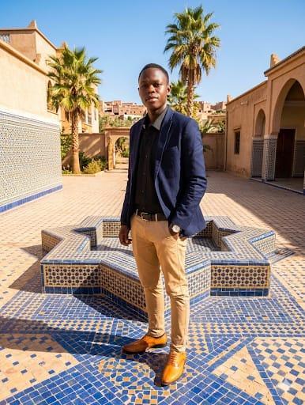
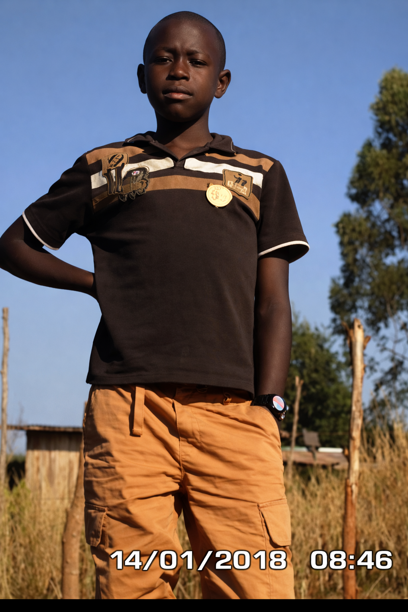
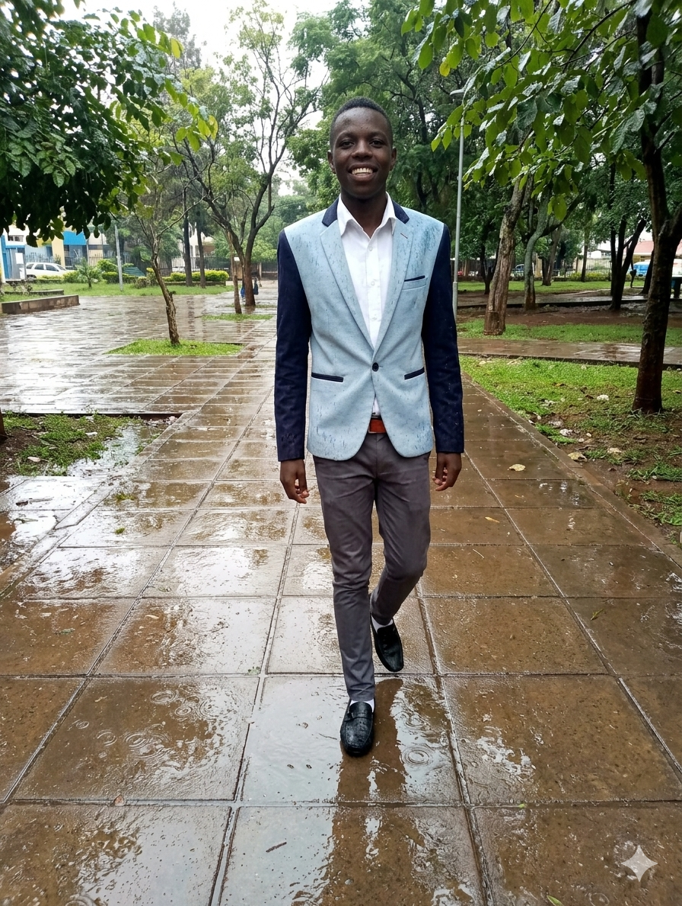
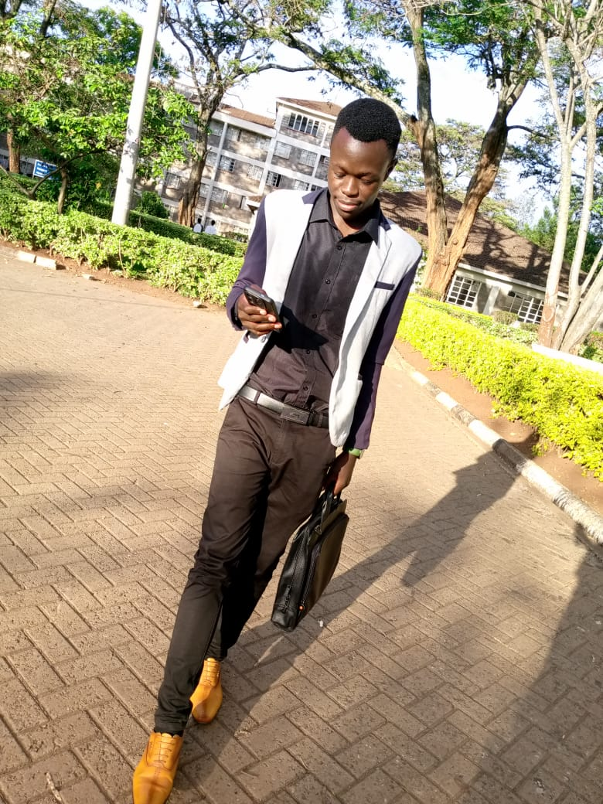
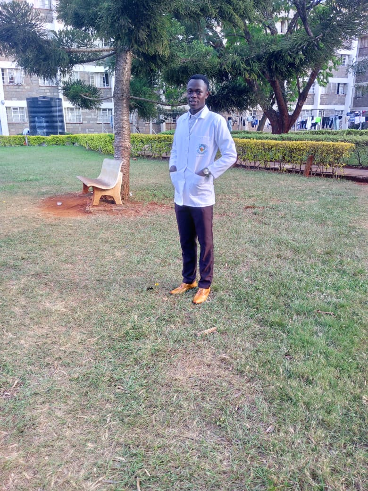

Robert Wakanya
The Voice of Africa
The Foundation
Born in 2006, Bobby is a driven and ambitious individual from Kwanza Constituency. His early education took place at Makhonge, Marakaru, and Mirembe Primary Schools, where his academic curiosity began. He then joined St Paul's High School Bwayi, where he served as School President and excelled in his KCSE exams, proving himself a natural leader.

Professional Path
Bobby is currently pursuing a Bachelor of Commerce (Accounting and Finance) at Kenyatta University, with plans to complete his CPA certification. His passion for leadership and community development has fueled his aspiration to become a Member of Parliament for Kwanza Constituency, driving positive change in his hometown.

Skills & Achievements
- Leadership and team management (ex-School President)
- Problem-solving and analytical thinking
- Strong communication and public speaking skills
- Proficient in financial analysis and accounting principles
Passions & Hobbies
- Music: Gospel, Hip-Hop, and African music
- Studying and analyzing problems to find solutions
- Leadership and community development
- Reading business and leadership books
- Playing basketball and table tennis
Entrepreneurial Spirit
Bobby has developed a deep-rooted interest in business and entrepreneurship, viewing it as a powerful tool for economic empowerment and community transformation. Leveraging his expertise in Accounting and Finance, he aims to establish sustainable business ventures designed to create real employment opportunities for the youth of Kwanza Constituency.
He believes that sound financial management, innovation, and ethical leadership are key drivers of successful businesses, and he is committed to using these principles to uplift his community while contributing to the broader economic growth of Kenya.

